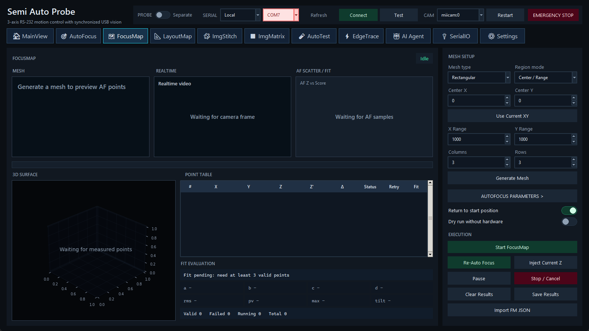

前置条件
- 完成单点 AutoFocus 验证；Serial、camera frame、Probe Separate 和安全 Z 均已确认。
- 运行前清除与目标样品无关的旧结果。移动样品、改变夹具或重定义坐标后应重建映射。
定义 Mesh
- 选择 Rectangular 或 Hexagonal。
- Region mode 使用 Center / Range 时，可输入 Center X/Y 或单击 Use Current XY，再给出 X/Y Range、Columns 与 Rows。角点模式下先在载台位置记录 P1/P2。
- 单击 Generate Mesh，在预览中检查点数、边界和顺序。生成 mesh 只计算路径，不移动硬件。
执行选项
- AUTOFOCUS PARAMETERS：为网格采样指定 AF metric、步长、范围、重试和拟合参数。
- Return to start position：任务完成后尝试回到起始坐标。
- Dry run without hardware：验证网格和状态流，不发送真实运动/相机命令。
- Start FocusMap：从待测点开始完整采集。
- Re-Auto Focus：对当前/选中点重新自动对焦。
- Inject Current Z：把当前 Z 作为选中点结果，适合人工确认，但应记录来源。
- Pause / Stop / Cancel：暂停后可继续；Stop/Cancel 设置 cooperative stop，需等待当前阻塞动作返回，并在结束后核对实际 XYZ。
结果与平面拟合
Point Table 列出 X、Y、Z、拟合 Z′、残差 Δ、状态、重试和拟合信息；3D Surface 显示有效点和平面。至少 3 个有效且非共线点才可建立平面。Fit Evaluation 中检查有效/失败点数、最大残差、tilt 与异常点，不应只看“fit completed”。
拟合平面可在 MainView 的 FocusMap Z、ImgStitch、ImgMatrix 或 AutoTest 中提供随 XY 变化的 Z。任何超出已采样区域的外推都应谨慎验证。
保存、恢复与导入
- 运行结果自动保存为
last_focusmap_mapping.json，--restore-last 会读取该文件。
- Save Results 的默认手动文件名是
last_af_plane_mapping.json；这是与自动恢复文件不同的名称。
- Import FM JSON 读取兼容的 mesh、measured points 和 sample plane model。导入后先核对坐标与样品是否仍匹配。
有效期。FocusMap 不是永久校准。更换 objective、样品、夹具、相机姿态、载台零点或热状态后，应重新验证或重建。
相关主题：AutoFocus · ImgStitch · JSON 字段